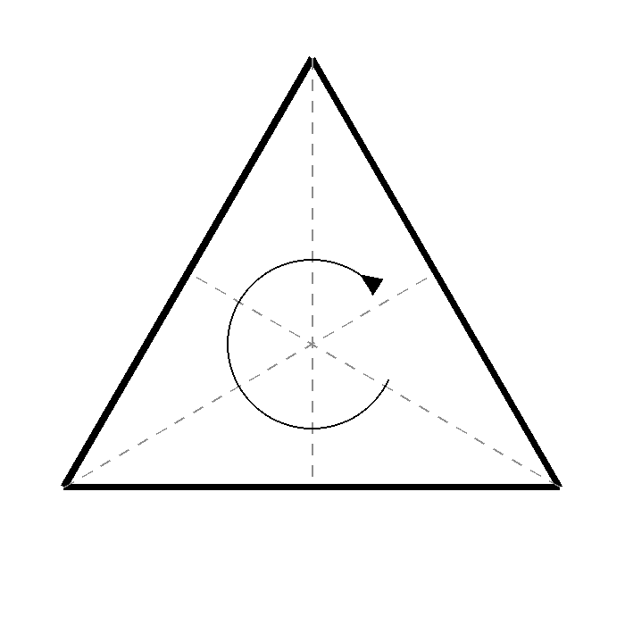
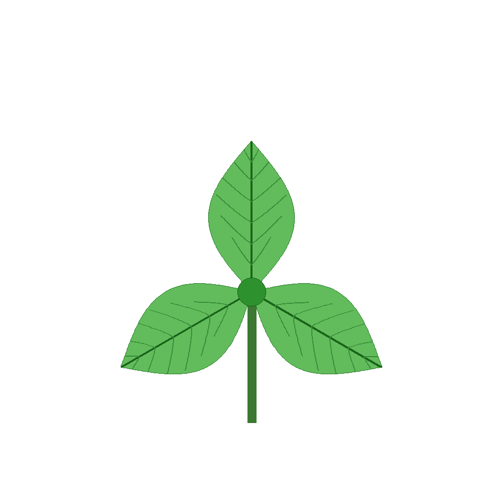

Symmetry in Plants (\(\neq\))
Plant leaves display a remarkable variety of symmetrical arrangements. Many leaves exhibit bilateral symmetry, where a single line divides the leaf into two mirror-image halves. Other plant structures show radial symmetry, in which features are arranged around a central point. In some flowers and leaf rosettes, one observes higher-order rotational symmetries, where a rotation through a specific angle leaves the pattern unchanged. These recurring arrangements are not merely aesthetic; they often reflect underlying developmental processes that help plants maximize light capture, structural stability, and make efficient use of space.


Symmetry occupies a central place in mathematics because it provides a way to describe order, regularity, and invariance. Mathematicians study the transformations that leave an object unchanged, such as reflections, rotations, and translations. By focusing on these invariant properties, mathematicians are able to classify shapes and patterns, compare biological structures, and uncover deeper relationships between seemingly different forms. The mathematical study of symmetry naturally leads to group theory, one of the most important branches of modern algebra.
Group Theory
A group is a collection of transformations together with rules for combining them. For a trifold symmetric pattern, for instance, the set of rotations through 0°, 120°, and 240° forms a group because combining any two of these rotations produces another rotation from the same set. Group theory provides a powerful language for describing symmetry not only in plants, but also in crystals, molecules, physics, and art. What begins as the observation of a simple repeating pattern in nature thus develops into a rich mathematical framework that helps explain structure and order across many scientific disciplines.
Try it yourself
The triangle’s three rotations described above – 0°, 120°, and 240° – are just one small example of a much bigger idea. Below, pick two turns and combine them, and watch where the shape lands: however you pick your two turns, you always end up back on one of the same allowed positions. Switch the shape to see the same pattern hold for a square, a pentagon, and a hexagon too.